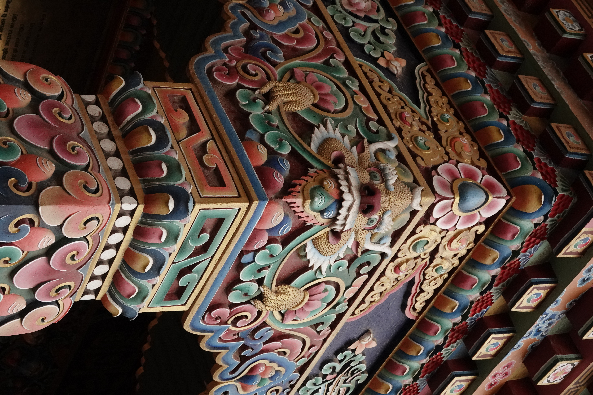
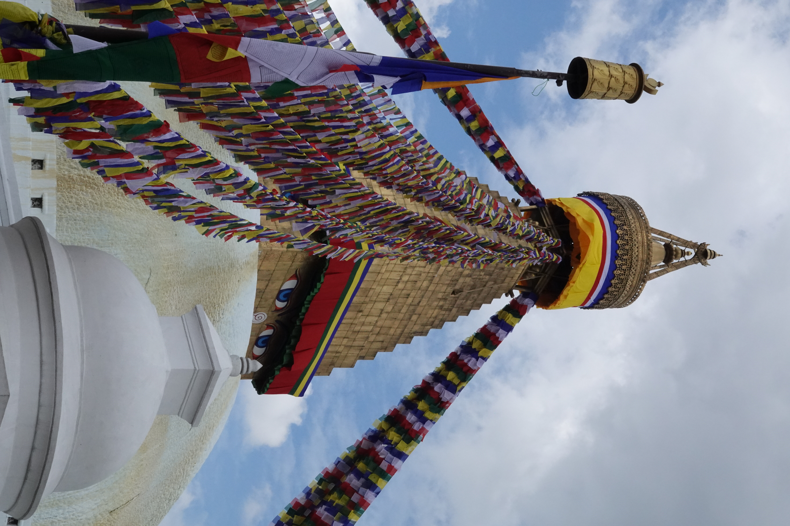
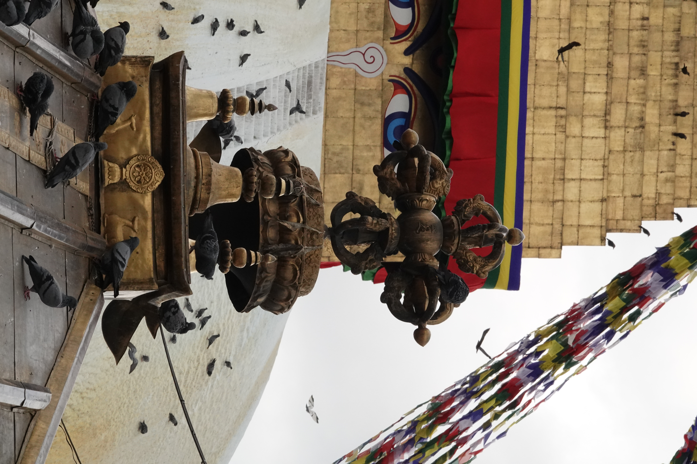

Boudha was the area where I spent the most time in Kathmandu. It is a part of Kathmandu that is mostly inhabited by Tibetan people, many of whom
came to Nepal after fleeing Tibet in the 1960s. The area includes the famous Boudha Stupa, and many Tibetan Gompas (monasteries).

This is one of my favorite pictures. It is a pillar on the front of Tamang Gompa on the North side of the stupa,
across from the Hariti shrine.

This is the great stupa. Boudhanath Mahachaitya, Khasti Chaitya, or Jarung Kashor depending on who you ask.
I would walk by here every single day.
Shrine in Ghyoilisang Peace Park (Guru Rinpoche Park) near the stupa.
A pigeon flying past the stupa. the pigeons were fun, but there were so many you could smell them in certain
places where lots of them hung out. They leave food out for them and lots of tourists like to take pictures running
into swarms of them.

Vajra atop the Hariti shrine near the stupa. Hariti is a Buddhist deity who kidnapped children until the Buddha
kidnapped one of her own children and she dedicated herself to being a protector.
Kora (circumnambulation) around the stupa
This is the top of the gate to Shechen monastery in Boudha, a couple blocks North of the great stupa.
I lived in a guest house near the North side of Shechen, and the monastery was one of my favorite places to
visit on my way to and from classes. It has a very beautiful courtyard with some nice places to sit.